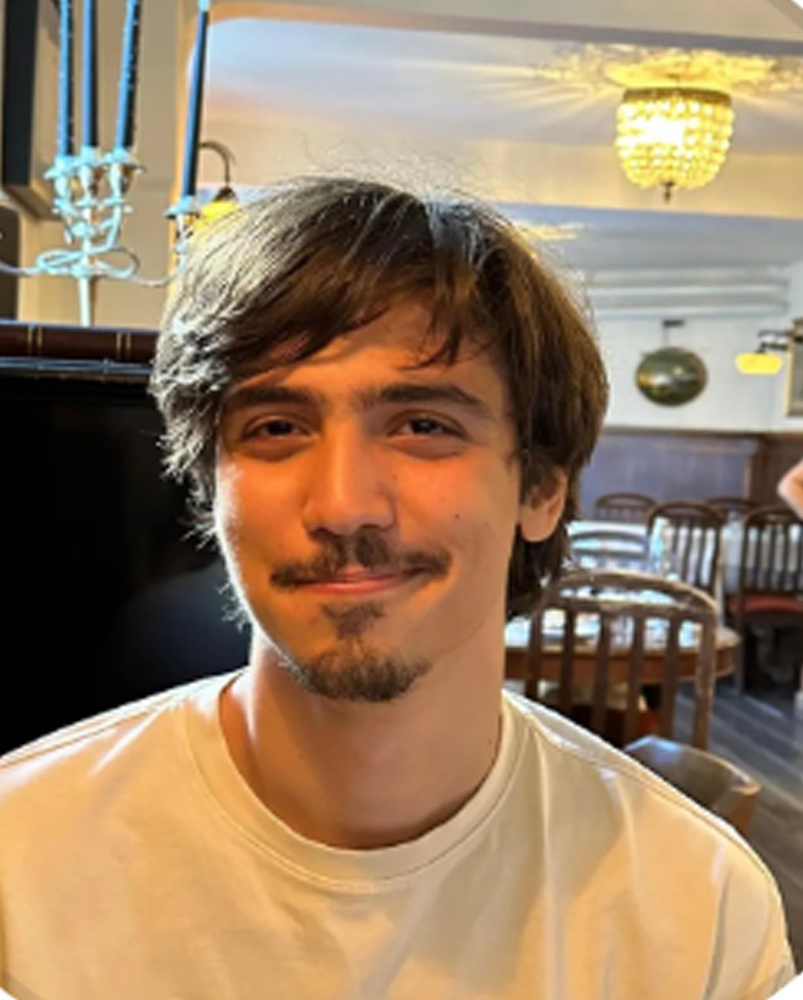

Cemal Efe Gayir
Software Developer
Currently studying for a BA in Mechanical Enginnering at Koc University, he works as a software developer in OpenLattice. His contributions to published research relates to design for additive manufacturing, computer modeling of cellular structures, and topology optimization focusing on lattices.
Mechanical Eng.Additive ManufacturingLattices